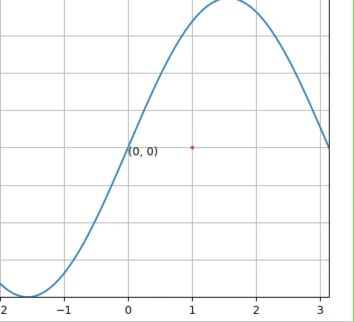

Topic 2 Calculus Review
This note reviews the basics of Calculus which will be used throughout the semester. We will not derive or prove anything in this note.
2.1 Limits and Continuity
The concept of continuity of function is defined based on the concept of the limit of a function at a given point. They are core concepts in numerical analysis. We use \(\epsilon\text{-}\delta\) language to summarize the limits and continuity. We only use single-variable functions to describe these concepts.

2.1.2 Continuity
The continuity of a function is defined based on the concept of limit.
Definition: Let \(f\) be a function defined on a set \(X\) of real numbers and \(x_0 \in X\). Then \(f\) is continuous at \(x_0\) if \[ \lim_{x\to x_0}f (x) = f (x_0). \] The function \(f\) is continuous on the set \(X\) if it is continuous at each number in \(X\).
2.1.3 Convergence of A Sequence
Convergence is one of the fundamental concepts in numerical analysis which is related to the limit of a sequence of real or complex numbers. In numerical analysis, the order of convergence and the rate of convergence of a convergent sequence are quantities that represent how quickly the sequence approaches its limit.
Definition: Let \(\{x_n\}^\infty_{n=1}\) be an infinite sequence of real numbers. This sequence has the limit x (converges to x) if, for any \(\epsilon > 0\) there exists a positive integer \(N(\epsilon)\) such that \(|x_n-x|<\epsilon\), whenever \(n > N(\epsilon)\). The notation \[ \lim_{n \to\infty}x_n = x, \text{ or } x_n \to x \text{ as } n\to \infty, \] means that the sequence \(\{x_n\}^\infty_{n=1}\) converges to \(x\).
Definition: If \(f\) is a function defined on a set \(X\) of real numbers and \(x_0 \in X\), then the following statements are equivalent:
\(f\) is continuous at \(x_0\);
If \(\{x_n\}^\infty_{n=1}\) is any sequence in \(X\) converging to \(x_0\), then \(lim_{n\to \infty} f (x_n) = f (x_0)\).
Remark: The values of above sequences in \(X\) could be from both sides of \(x_0\).

2.2 Differentiation
In numerical analysis, many numerical algorithms are based on the assumption that the curve of the underlying function is continuous and smooth over an interval. The smoothness of a curve is characterized by the concept of differentiation.
2.2.1 Definition
(Average) Rate of Change: The rate of change of a function \(f(x)\) over interval \([x, x+\Delta x]\) is defined to be \[ \frac{f(x+\Delta x) - f(x)}{\Delta} \]
Geometrically, the average rate of change of \(f(x)\) over the interval is the slope of the secant line that passes through the two points on the curve corresponding to the two ending values of the interval.
Definition: Let \(f\) be a function defined in an open interval containing \(x_0\). The function f is differentiable at \(x_0\) if \[ f^\prime(x_0) = \lim_{x\to x_0}\frac{f (x)-f (x_0)}{x-x_0} \]
exists. The number \(f(x_0)\) is called the derivative of \(f\) at \(x_0\). A function that has a derivative at each number in a set \(X\) is differentiable on \(X\).
We will assume that you are proficient in using all rules of derivatives. Particularly, the power and chain rules.
2.2.2 Properties
Some of the properties and existence theorems will be used in developing numerical algorithms for optimization.
Rolle’s Theorem: Suppose \(f \in C[a, b]\) (continuous) and \(f\) is differentiable on \((a, b)\). If \(f (a) = f (b)\), then a number \(c\) in \((a, b)\) exists with \(f(c) = 0\).
The following mean value theorem is a generalization of Rolle’s Theorem.
Mean Value Theorem: If \(f \in C[a, b]\) and f is differentiable on \((a, b)\), then a number \(c\) in \((a, b)\) exists with \[ \frac{f(b) - f(a)}{b - a}. \] We can visualize the mean value theorem in the following figure.

Extreme Value Theorem: If \(f \in C[a, b]\), then \(c_1, c_2 \in [a, b]\) exist with \(f (c_1) \le f (x) \le f (c_2)\), for all \(x \in [a, b]\). In addition, if \(f\) is differentiable on \((a, b)\), then the numbers \(c_1\) and \(c_2\) occur either at the endpoints of \([a, b]\) or where \(f\) is zero.
Example 1: Use a computer program to find the absolute minimum and absolute maximum values of \[ f (x) = 5 \cos (2x) - 2x \sin (2x) \] on the intervals \([1, 2]\) and \([0.5, 1]\), respectively.
Solution: We could free online graphing tools such as WolframAlpha (https://www.wolframalpha.com/) to sketch the function. We will use R to plot the function.
x=seq(0, 2.5, by = 0.01)
y=5*cos(2*x) - 2*x*sin(2*x)
plot(x,y, type="l", lwd=2, col="navy", bty="n")
abline(h=0, lty=2, col="red")
abline(v=c(0.5, 1, 2), lty=4, col="skyblue")(a). We can see from the above figure that, the absolute maximum on \([1, 2]\) is \(f(2) = 5\cos(2\times 2) - 2\times 2 \sin(2\times 2) = -0.2410081\) (see the following code)
## [1] -0.24100812The absolute minimum is the solution to \(f^\prime(x) = 0\). That is, we need to solve equation \(-10\sin(2x) - 2\sin(2x) - 4x\cos(2x) = 0\) that is equivalent to \(\tan(2x) = x/3\). This is a nonlinear equation. There is no closed form of the solution. We will introduce various methods to find the root of this equation. For now, we simply call an R function to find the root.
fn = function(x) tan(2*x)+x/3 # define the function
root = nleqslv(1.5, fn)$x # the first list $x in the output is the root
f.min = 5*cos(2*root) - 2*root*sin(2*root) # finding the absolute minimum
list(root = root, abs.min = f.min)## $root
## [1] 1.3582299
##
## $abs.min
## [1] -5.6753013Therefore, the absolute minimum is \(f(1.35823-5.675301) = -5.675301\).
(2). Since the function is strictly decreasing on \([0.5, 1]\), to find the absolute minimum and maximum of the function on \([0.5, 1]\), we simply evaluate the function at \(x = 0.5\) and \(x = 1\) (see the following code).
## $abs.max
## [1] 1.8600405
##
## $abs.min
## [1] -3.899329Therefore, the absolute minimum is \(f(1) = -3.899329\) and the absolute maximum \(f(0.5) = 1.860041\).
Intermediate Value Theorem: If \(f \in C[a, b]\) and \(K\) is any number between \(f (a)\) and \(f (b)\), then there exists a number \(c\) in \((a, b)\) for which \(f (c) = K\).
The results in intuitive from the following figure.
Example 2: Show that \(x^5 - 2x^3 + 3x^2 - 1 = 0\) has a solution in the interval \([0, 1]\).
Solution: We want to prove the existence of a solution in \([0, 1]\). We first sketch the function in the following.
x = seq(-0.5, 1.5, by =0.01)
y = x^5-2*x^3 + 3*x^2-1
plot(x,y, type="l", lwd=2, col="blue", bty="n")
abline(v=c(0,1), lty = 2, col = "purple")
abline(h=0, lty = 4, col="darkred")After inspecting the curve, choose \(a = 0\) and \(b = 1\) and then use the intermediate value theorem. Note that \(f(0) = -1\) and \(f(1) = 1\). Therefore, \(f(x) = 0\) has a solution in \([0,1]\).
Remark: The intermediate value theorem states that the existence of at least one solution in interval \([a, b]\).
2.3 Integration
Numerical integration is one of the major topics in numerical analysis. We focus on the definite integral of the single variable function.
2.3.1 Series vs Sequence
A sequence is an arrangement of any objects or a set of numbers in a particular order followed by some rule. If \(a_1, a_2, a_3, a_4,\cdots\), denote the terms of a sequence, then \(1,2,3,4, \cdots\) denotes the position of the term. A sequence can be defined based on the number of terms i.e. either finite sequence or infinite sequence.
If \(a_1, a_2, a_3, a_4,\cdots\) is a sequence, then the corresponding series is given by \(S_n = a_1+a_2+a_3 + \cdots + a_n\) for \(n = 1, 2, \cdots,\). If \(\lim_{n \to \infty} s_n = A\) (\(A\) is finite), then we call series \(s_n\) converges to \(A\).
2.3.2 Definition of Definite Integral
Riemann Integral: The Riemann integral of the function \(f\) on the interval \([a, b]\) is the following limit, provided it exists: \[ \int_a^bf(x) dx = \lim_{\max \Delta x_i \to 0} \sum_{i=1}^n f(z_i)\Delta x_i, \] where the numbers \(x_0, x_1, \cdots , x_n\) satisfy \(a = x_0 \le x_1 \le \cdots \le x_n = b\), where \(x_i = x_i - x_{i-1}\), for each \(i = 1, 2, \cdots, n\), and \(z_i\) is arbitrarily chosen in the interval \([x_{i-1}, x_i]\).
Remark1: The above Riemann integral involves two concepts
Partition of an interval: \(a = x_0 \le x_1 \le \cdots \le x_n = b\) is also called a partition of interval \([a,b]\).
\(D_n = \sum_{i=1}^n f(z_i)\Delta x_i\) is so called Darboux sum.
In practice, we take a simple equally spaced partition to evaluate the Riemann integral. To be specific, use the partition such that \(x_i = a + i(b-a)/n\). With this equally-spaced partition, the Riemann integral has the following simple form \[ \int_a^b f(x) dx = \lim_{n \to \infty}\frac{b-a}{n}\sum_{i=1}^nf(x_i), \] The geometric display of the Darboux in the above expression is given below
The area of the orange rectangle is the i-th term in the Darboux sum.
The following animated graph shows the process of approximating the integral by the Darboux sum.
2.3.3 Taylor Expansion
Since polynomial functions are relatively easier to handle in mathematics. If we want to study the local behavior of a complicated function (algebraically), we could use a polynomial to approximate the function locally. The Taylor series is one such polynomial that is used frequently in practice.
Taylos’s Theroem: Suppose \(f \in C^n[a,b]\), that \(f^{(n+1)}\) exists on \([a,b]\), and \(x_0 \in [a,b]\). For every \(x \in [a,b]\), there exists a number \(\xi(x)\) between \(x_0\) and \(x\) with
\[ f(x) = P_n(x) + R_n(x), \] where \[ P(x) = f(x_0) + f^\prime(x_0)(x - x_0)+\frac{f^{\prime\prime}(x_0)}{2!}(x-x_0)^2+\cdots+\frac{f^{(n)}(x_0)}{n!}(x-x_0)^n \] \[ =\sum_{k=0}^n\frac{f^{(k)}(x_0)}{k!}(x-x_0)^k. \] and \[ R_n(x) = \frac{f^{(n+1)}(\xi(x))}{(n+1)!}(x-x_0)^{n+1}. \]
Here \(P_n(x)\) is called the nth Taylor polynomial for f about \(x_0\), and \(R_n(x)\) is called the remainder term (or truncation error) associated with \(P_n(x)\).
When \(x_0 = 0\), the Taylor polynomial is called Maclaurin polynomial.
The following animated graph shows the process of Taylor approximation to function \(f(x) =e^{-x}\sin(x)\).
Example: Let \(f (x) = cos x\) and \(x_0 = 0\). Determine the second Taylor polynomial for \(f\) about \(x_0\).
Solution: We use the Taylor theorem to expand \(cos(x)\) up two 2nd order \[ cos(x) = f(0) + f^\prime(0)x+\frac{f^{\prime\prime}(0)}{2!}x^2+\frac{f^{(\xi(x))}(0)}{3!}x^3 \] \[ =1 - \frac{1}{2}x^2+\frac{1}{6}x^3\sin[\xi(x)]. \] where \(\xi(x)\) is in \([0, x]\). The following figure shows the approximation.